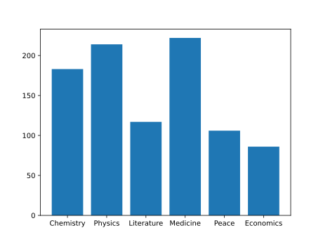

A bar graph visually presents qualitative data.
Bar graphs are used show the distribution of qualitative (categorical) data.
It shows the frequency of values in the data. Frequency is the amount of times that value appeared in the data.
Each category is represented with a bar. The height of the bar represents the frequency of values from that category in the data.
Here is a bar graph of the number of people who have won a Nobel Prize in each category up to the year 2020:
Some of the categories have existed longer than others. Multiple winners are also more common in some categories. So there is a different number of winners in each category.
Note: Bar graphs are similar to histograms, which are used for quantitative data.